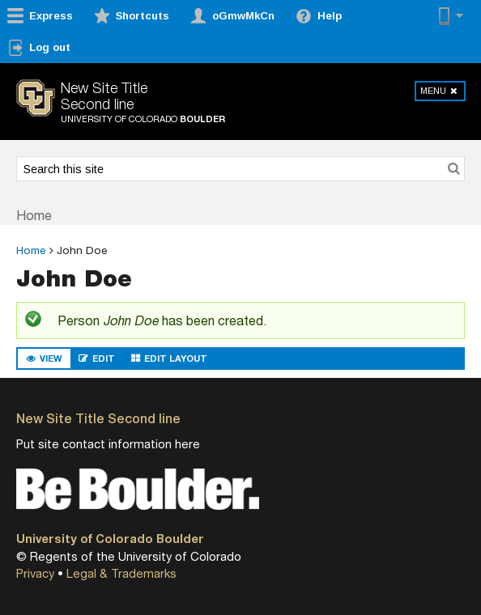

Behat and Drupal:
Behavior Driven (Drop) Development

@alexfinnarn
Finn's Web


Given...
When... And...
Then...
Feature: Photo Gallery Access
Test access to and creation of photo galleries.
@api
Scenario Outline: All users should be able to view a photo gallery node.
Given I am logged in as a user with the <\role\> role
When I create a "photo_gallery" node with the title "New Gallery"
Then I should see <\message\>
Examples:
| role | message |
| content_editor | "New Gallery" |
| site_owner | "New Gallery" |
| administrator | "New Gallery" |
| developer | "New Gallery" |
| edit_my_content | "New Gallery" |
@api @node_creation
Scenario: An anonymous user should be able to view Photo Gallery content.
Given I am an anonymous user
And I create a "photo_gallery" node with the title "New Gallery"
Then I should see "New Gallery"
Feature: WYSIWYG Shortcodes.
Test using CKEditor shortcodes.
@api @javascript @wysiwyg
Scenario: A content editor should be able to add an image caption shortcode.
Given I am logged in as a user with the "content_editor" role
When I go to "node/add/page"
And I fill in "Title" with "My Image Caption Shortcode"
And I attach the file "/data/web/express/clean/profiles/express/tests/..."
And I fill in "Alternate text" with "Ralphie"
And I press the "Upload" button
Then I should see a ".image-widget-data" element
When I press the "Insert" button
And I wait for AJAX
# TODO Figure out how to switch to iframe contexts
#And I switch to iframe ".image-medium"
#And I press the "Image Caption Shortcode Generator" button
#And I wait for AJAX
use Behat\Behat\Context\Step\Given;
/**
* Defines application features from the specific context.
*/
class ExpressContext extends RawDrupalContext
implements SnippetAcceptingContext {
/**
* @BeforeSuite
* Enable bundle and add authentication data.
*/
public static function prepare($scope) {
$data = array(
'sids' => array (
'directory' => 'directory',
),
'authenticationMode' => 1,
'loginConflictResolve' => 2,
'acctCreation' => 4,
'loginUIUsernameTxt' => NULL,
'loginUIPasswordTxt' => NULL,
....
);
variable_set('ldap_authentication_conf', $data);
}
}
/**
* @Given I wait for AJAX
*/
public function iWaitForAjax() {
$this->getSession()->wait(5000,
'typeof jQuery !== "undefined" && jQuery.active === 0
&& document.readyState === "complete"');
}
/**
* @When /^I disable the "(?P<\text\>(?:[^"]|\\")*)" module$/
*/
public function iDisableTheModule($text) {
module_disable(array($text));
}
/**
* @AfterStep
*/
public function takeScreenShotAfterFailedStep($scope) {
if (99 === $scope->getTestResult()->getResultCode()) {
$driver = $this->getSession()->getDriver();
if (!($driver instanceof Selenium2Driver)) {
return;
}
file_put_contents('/tmp/test.png',
$this->getSession()->getDriver()->getScreenshot());
}
}

Questions?
Demo time...